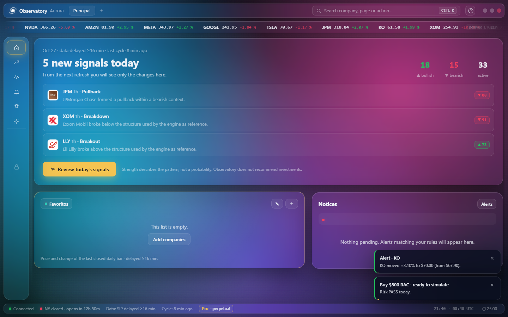
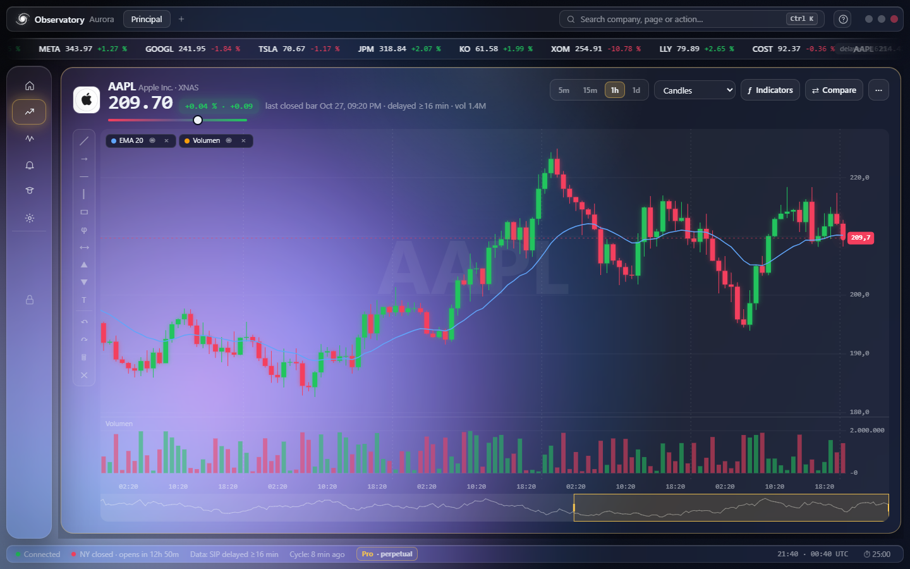
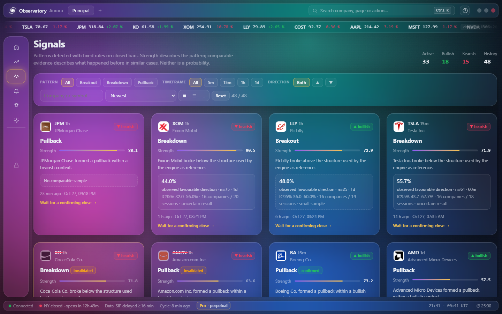

Basic
30 days$12 USD
- Signals and historical evidence
- Full charting workspace
- Alerts, history and data health
- Discord community
- Practice portfolio and study modules
Windows desktop app · US stocks · data delayed ≥16 min
Signal Observatory watches a list of US stocks, marks chart patterns with fixed, published rules, and shows what happened in comparable past cases, including when the sample is too small to say anything.
Research and study tool. It does not give investment advice and never places real orders.

It runs on your own PC with its own local database. Your watchlists, notes and settings stay on your computer.
Breakouts, breakdowns and pullbacks detected only on closed bars, on 5-minute, 15-minute, hourly and daily charts.
Each signal shows how similar past cases played out, with sample size and a 95% interval. A small or uncertain sample is labeled as such.
Candles, indicators, volume, drawing tools and side-by-side comparison of several companies.
Price and pattern alerts with your own rules, shown in the app as soon as each cycle finishes.
Eleven study modules (risk, screening, rebalancing, news) and a simulated portfolio. Paper only: no real money moves.
Guided tour, simple mode, themes and 13 interface languages, including English, Spanish and Portuguese.
Every price on screen is a closed bar with its age written next to it, so you always know how fresh the data is.

Strength describes how clean the pattern is. It is never presented as a probability of profit.

What Signal Observatory is not. It is not investment advice, a brokerage, a trading bot or a signal-selling service, and it makes no promise of returns.
The seller is not a registered investment advisor. Market data is delayed at least 16 minutes. Past and simulated results do not predict future results. Every decision, and any loss, is yours. Read the risk disclaimer.
Pay once for a fixed period. No automatic renewal: when the period ends, you choose whether to buy again.
Payments are processed by Lemon Squeezy, our merchant of record, which adds the sales tax or VAT of your country. Full refund within 14 days if the key was never activated. See the terms of sale.
Requirements: 64-bit Windows 10 or 11, about 700 MB free, an internet connection and a free Alpaca Markets account for market data.
Checkout is handled by Lemon Squeezy. You receive a receipt by email.
Your license key arrives by email, usually within a few minutes.
Run the installer. The app shows a code for your computer.
Paste the key. A short guided tour shows you around.
No. It describes patterns that already formed on closed bars and shows what happened in similar past cases. It does not recommend investments, and every decision is yours.
No. The Pro practice portfolio only simulates orders, locally or in an Alpaca paper account. Sending real orders is not possible from the app.
No. It uses market data delayed at least 16 minutes, from your own free Alpaca Markets account. The age of every price is shown on screen.
US-listed stocks and ETFs available through Alpaca's free data feed.
Not yet. Signal Observatory runs on 64-bit Windows 10 and 11.
Each key works on one computer. If you change PCs, write to us and we will re-issue it for free, up to two times per license period.
You get a full refund within 14 days of purchase if you have not activated the key. Consumers keep any additional rights their local law grants. Details are in the terms of sale.
Very little. The app runs on your PC and does not send your watchlists or notes anywhere. Lemon Squeezy processes your payment. See the privacy policy.
The Discord server has install help, a bug channel, a Spanish channel and announcements. New members verify first to keep bots out.